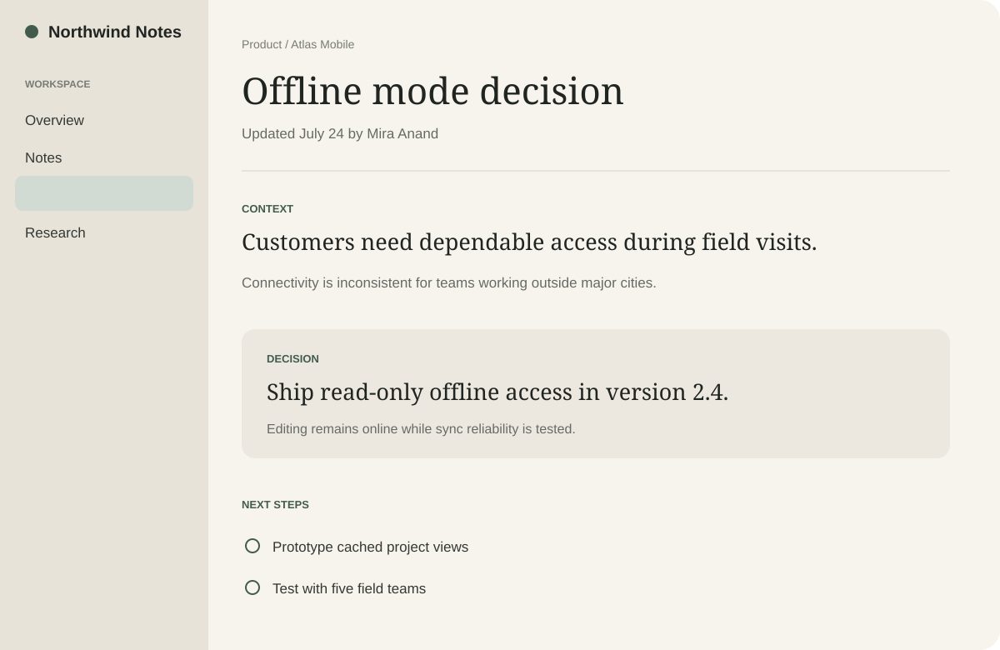
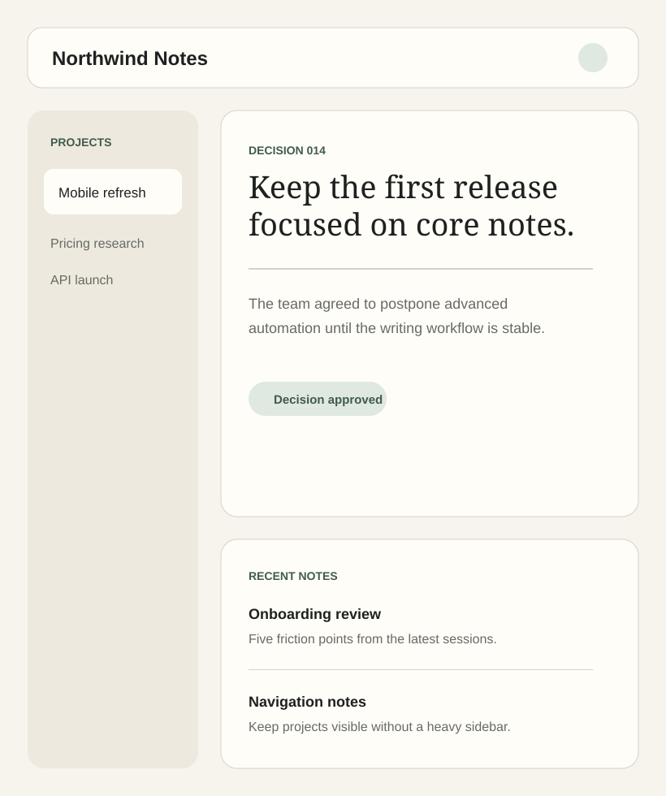
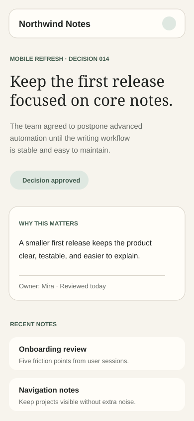

Responsive
A mobile-first layout that remains composed from compact phones to wide desktop screens.

Notes for thoughtful product teams
Northwind Notes gives small teams one quiet place to document product thinking, decisions, and next steps without turning every idea into a meeting.
Static demo content. No account, tracking, or external service required.
Product decisions often begin in a call, continue in chat, and end up buried in a document nobody can find. The result is repeated discussion, unclear ownership, and work shaped by half-remembered context.
Teams do not need another complicated system. They need a dependable place where the reasoning behind the work remains readable.
Northwind Notes organizes projects around concise notes, explicit decisions, and visible follow-ups. Each page is designed to be scanned quickly, linked easily, and maintained without ceremony.
The interface stays out of the way, so the team can focus on what changed, why it matters, and what happens next.
Four foundations make this template practical to reuse, maintain, and ship.
A mobile-first layout that remains composed from compact phones to wide desktop screens.
Semantic structure, visible focus, keyboard-friendly controls, and reduced-motion support are included.
Plain HTML, CSS, and JavaScript. No dependencies, external fonts, or build process.
Clear design tokens and predictable sections make content and visual changes straightforward.
A large local preview asset anchors the page without a noisy gallery or decorative carousel.


These testimonials are clearly marked placeholder content and should be replaced before publishing.
“Our weekly planning became shorter because decisions finally had a reliable home.”
“It feels focused enough for daily use and simple enough that nobody needs training.”
“The structure gives our research notes clarity without making the process feel heavy.”
Simple answers, available without leaving the keyboard.
Yes. CalmLanding is released under the MIT License, so commercial and personal use are permitted with the required license notice.
No. Open index.html directly, or publish the repository through any static hosting provider.
Replace the desktop, tablet, and mobile SVG files in assets/images, then update their dimensions and alternative text in index.html.
Yes, but form processing requires a backend or third-party service. Review its privacy, accessibility, and security implications before adding it.
Yes. The menu button exposes its state, focus remains visible, and the mobile menu closes with Escape.
The template targets current versions of Chrome, Edge, Firefox, and Safari. Internet Explorer is not supported.
Start with less noise
Replace the demo content, add your product previews, and publish a focused landing page without installing anything.